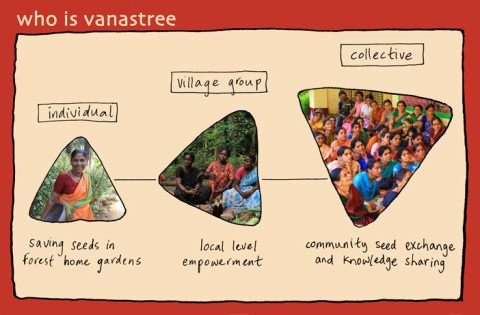
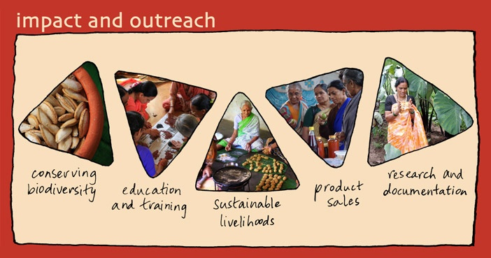

About Vanastree
A few small seeds have the power within them to feed a family; a fistful of seeds, the whole community. Our future depends on saving the traditional diversity of seeds around us.

Beginnings
Vanastree germinated in 2001, having been the seed of a dream for years. We have grown from one person and one village to about 150 persons in 15 villages.
Women have formed small seed groups, meet at gatherings, attend training programmes, go on study trips, and feel empowered to be part of a fraternity of like-minded people. The seed revolution that Vanastree leads has also become a vehicle for quiet but effective social change. Seeds are intrinsically linked with women's lives, and bestow upon them the power to realise themselves and to firmly assert their critical role in the social and ecological health of the Malnad.
Seed Sanctuary

Vanastree maintains a modest seed collection in Sirsi town. Rather than focusing on creating a central seed bank facility, we believe that the entire region lends itself to being a landscape-level seed storehouse. With the right inputs and energies, rural communities can maintain diversity and varietal purity as they have been doing for centuries. We strongly advocate level seed storehouse. With the right inputs and energies, rural communities can maintain diversity and varietal purity as they have been doing for centuries. We strongly advocate seed sovereignty and having a universal open source seed system.
Gift of Life
Along with ensuring that the thrust on conservation is balanced by carefully planned livelihoods, Vanastree maintains a synergy connecting its research, documentation, education and training programmes. The traditional gifting and exchange of seeds remains the root of our work with our other activities being new shoots.
Vanastree is a registered trust. We currently staff two persons at our office in Sirsi town. We are supported by the women of the collective, interns, the Friends of Vanastree circle in Sirsi and Bengaluru, and occasional volunteers.
Board of trustees
* Sunita Rao (Founder)
* Shyamala Hegde
* Shylaja Goranmane
* Dr. Muthatha Ramanathan

"Seeds have no caste, creed or religion - they are universal and secular. Vanastree nurtures this sentiment strongly in its work with various communities" -Manorama Joshi, Seed Leader
